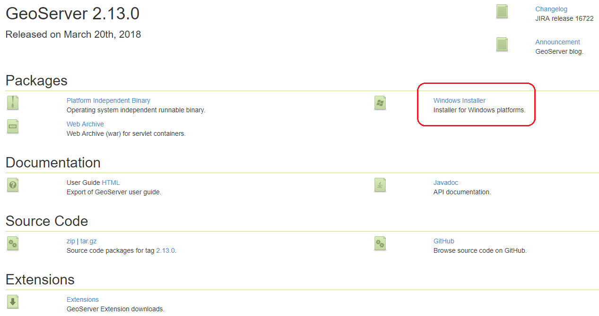
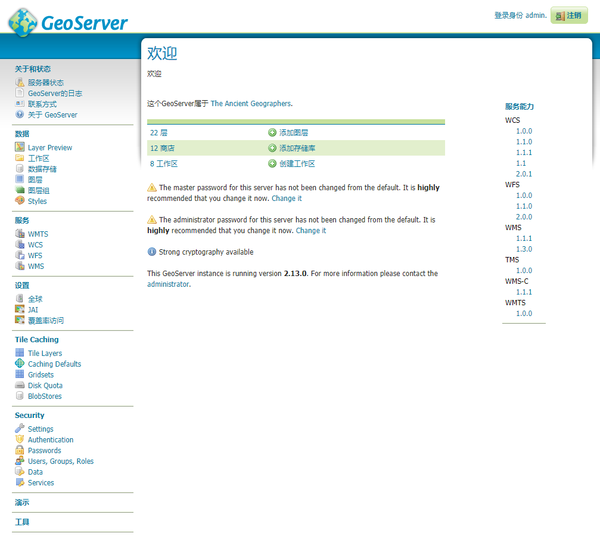
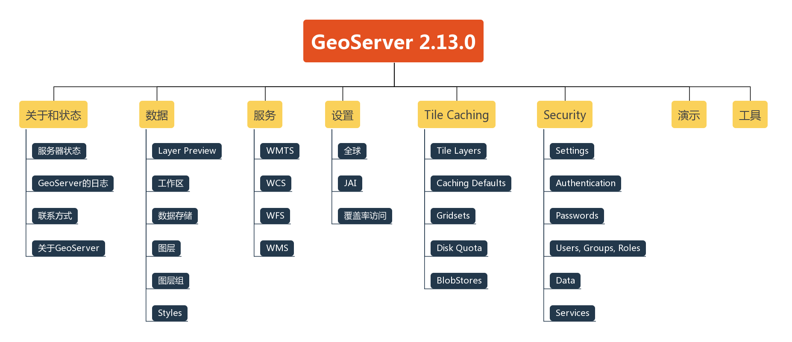
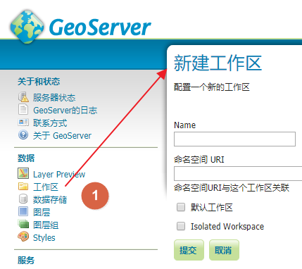
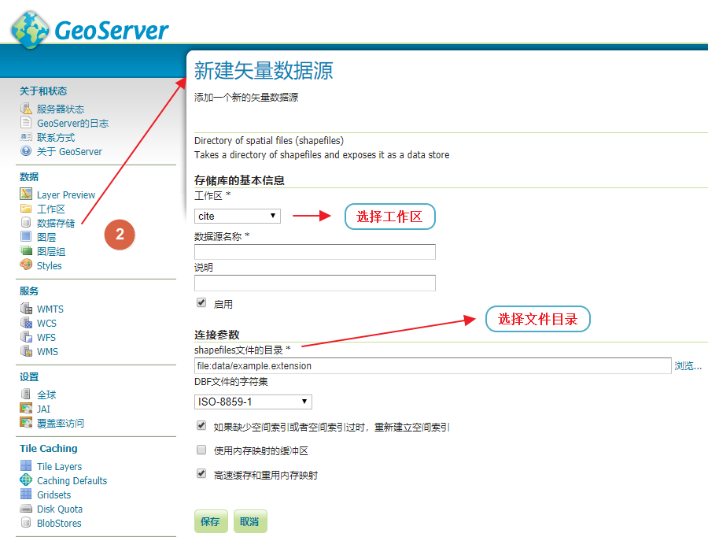
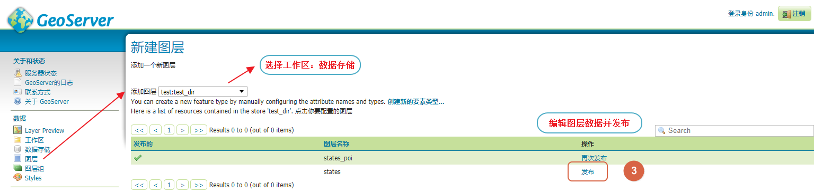
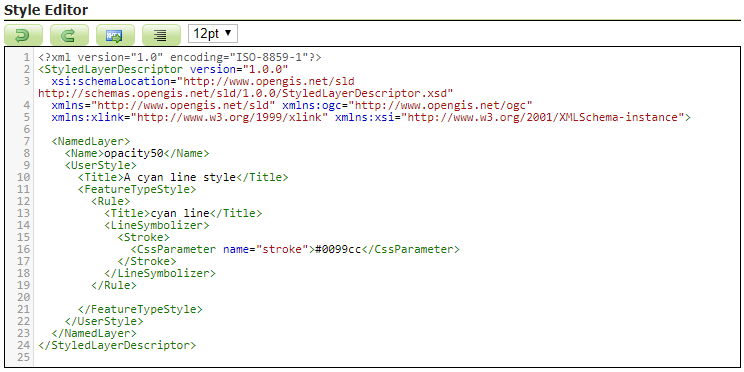
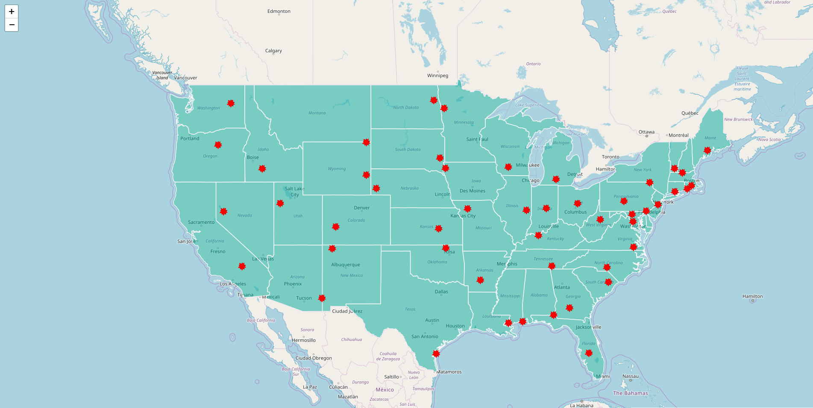

什么是 GeoServer
GeoServer是一个基于Java的软件服务器，允许用户查看和编辑地理空间数据。使用开放地理空间联盟（OGC）制定的开放标准，GeoServer在地图创建和数据共享方面提供了极大的灵活性。
GeoServer 特性
兼容 WMS 和 WFS 特性；支持 PostgreSQL、 Shapefile 、 ArcSDE 、 Oracle 、 VPF 、 MySQL 、 MapInfo ；支持上百种投影；能够将网络地图输出为 jpeg 、 gif 、 png 、 SVG 、 KML 等格式；能够运行在任何基于 J2EE/Servlet 容器之上；嵌入 MapBuilder 支持 AJAX 的地图客户端OpenLayers；除此之外还包括许多其他的特性。
GeoServer 安装
GeoServer的安装方式有多种，帮助文档中建议Windows和Mac OS采用独立安装方式。下面是Windows安装方法：『GeoServer的下载地址』
安装前请确保已安装Java Runtime Environment (JRE)。

安装过程很简单，选择JRE目录、数据目录、端口号等即可。
发布图层
安装后打开管理页面：http://localhost:8081/geoserver/web/


流程
新建工作区 → 新建数据源(矢量、栅格、其他) → 编辑并发布图层
新建工作区

新建数据源

编辑并发布图层

设置样式(Styles)
官方文档：http://docs.geoserver.org/latest/en/user/styling/index.html#styling
有4种方式添加样式：
- 默认样式(Points, Line, Polygon, Raster, Generic)；
- 从已经存在样式拷贝；
- 上传样式文件(QGIS可以导出SLD文件)；
- Style Editor：前3种方式都会将样式代码写进样式编辑器。

预览
在 Layer Preview 菜单中可使用 OpenLayers 预览已经发布的图层。
Leaflet 中加载发布的图层
1 | L.tileLayer.wms("http://localhost:8081/geoserver/test/wms", { |
预览
